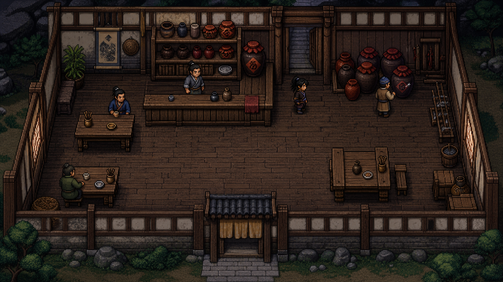
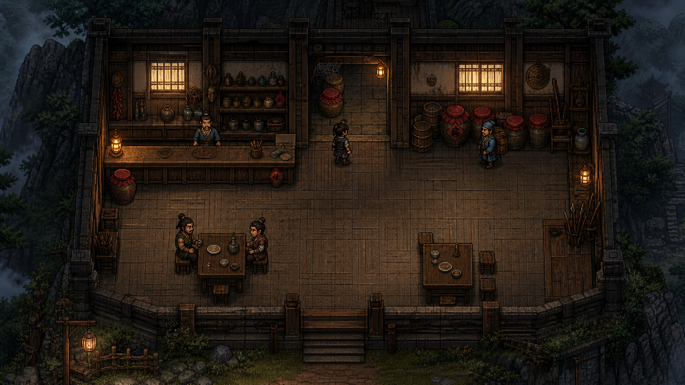
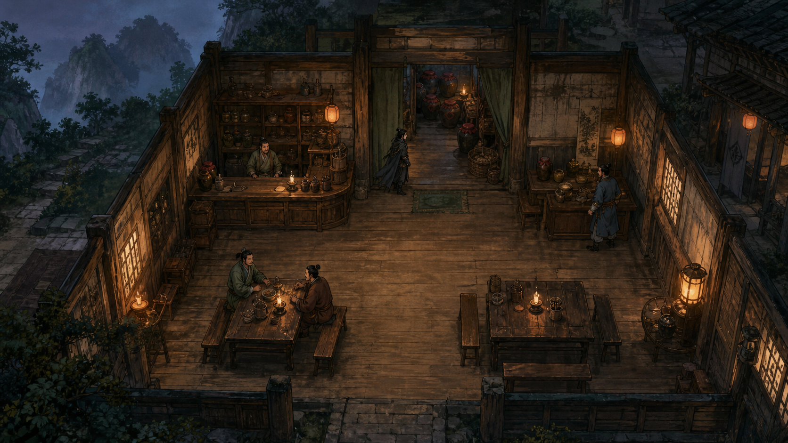

A. 复古像素
最接近九十年代群侠传气质，人物与地形直接、清楚。
资产制作最可控，但近看细节和角色表现力较弱。三张都是“酒馆后院调查酒虫”的实际俯视游戏视角。点击你最想长期游玩的那一种。

最接近九十年代群侠传气质，人物与地形直接、清楚。
资产制作最可控，但近看细节和角色表现力较弱。
保留群侠传的地图可读性，同时把山寨、蛊虫和人物做得更有质感。
最适合可玩 Demo，也容易继续扩展商队、山洞与狼潮。
画面最有小说感，空间与人物更写实，氛围也更强。
单张很漂亮，但角色动画、碰撞和场景一致性成本最高。